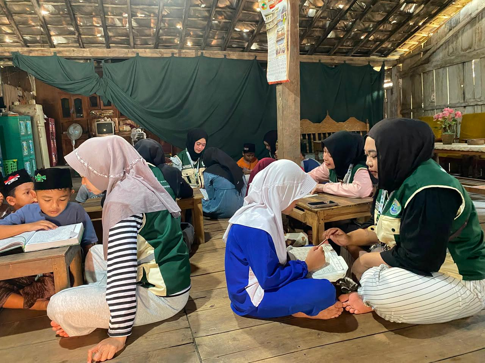
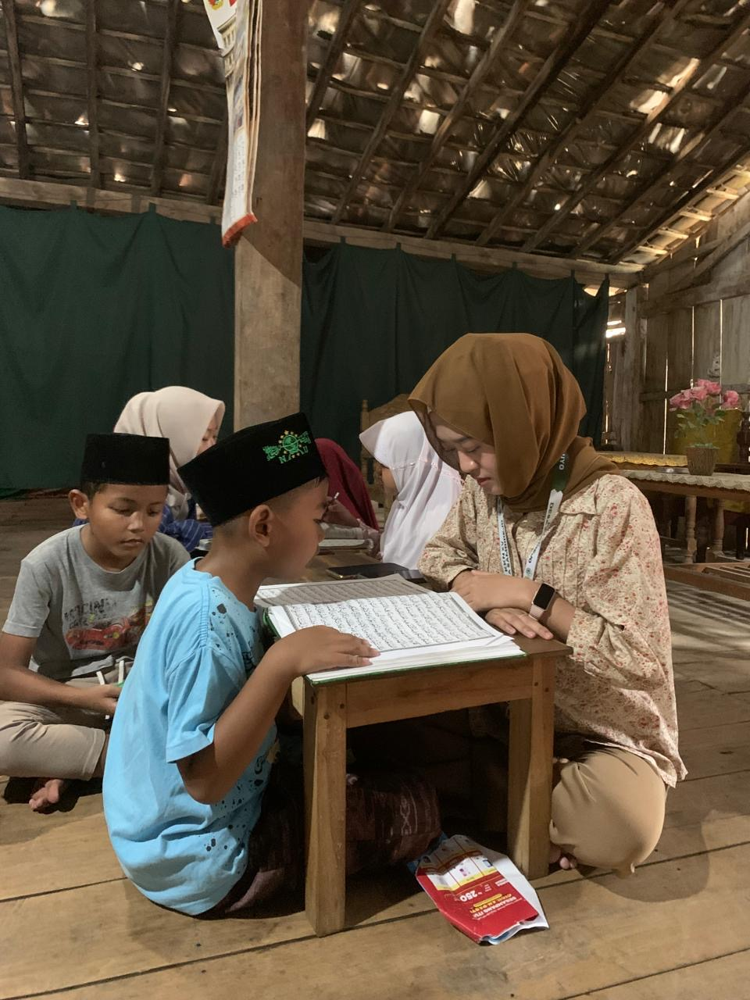
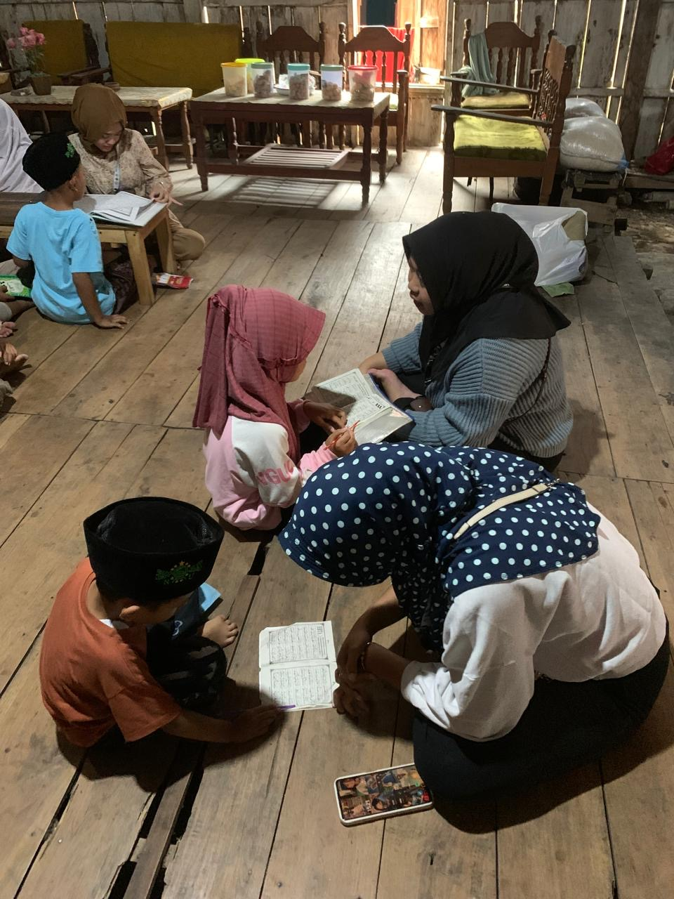
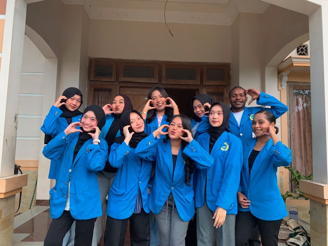
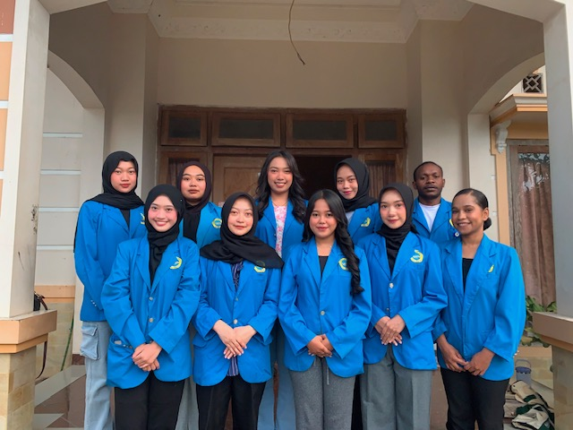
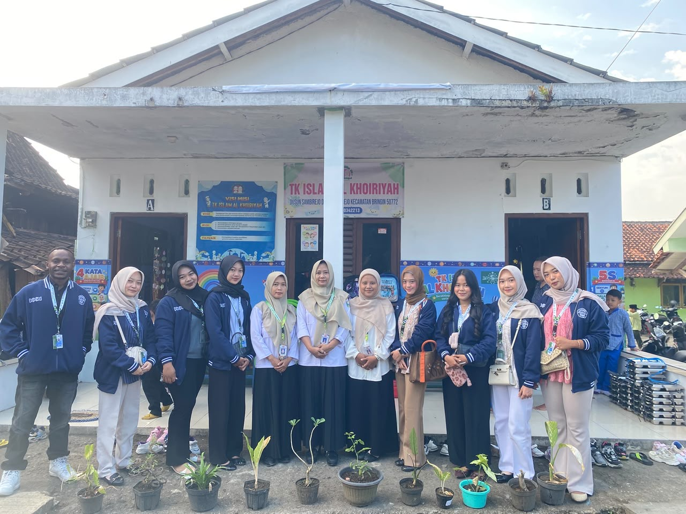
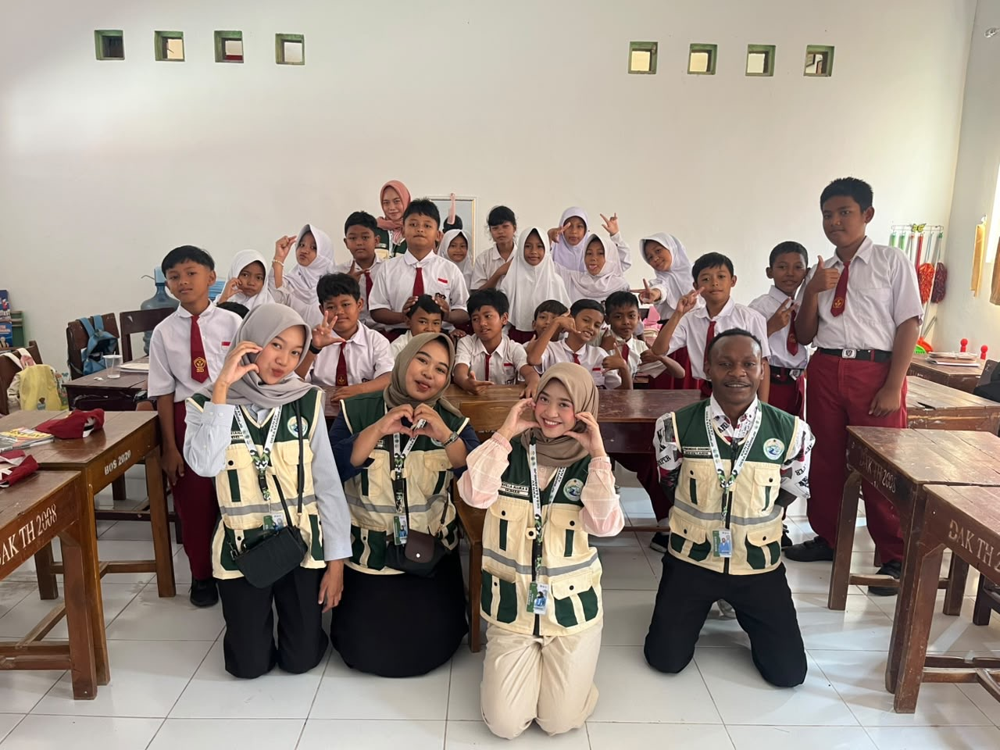
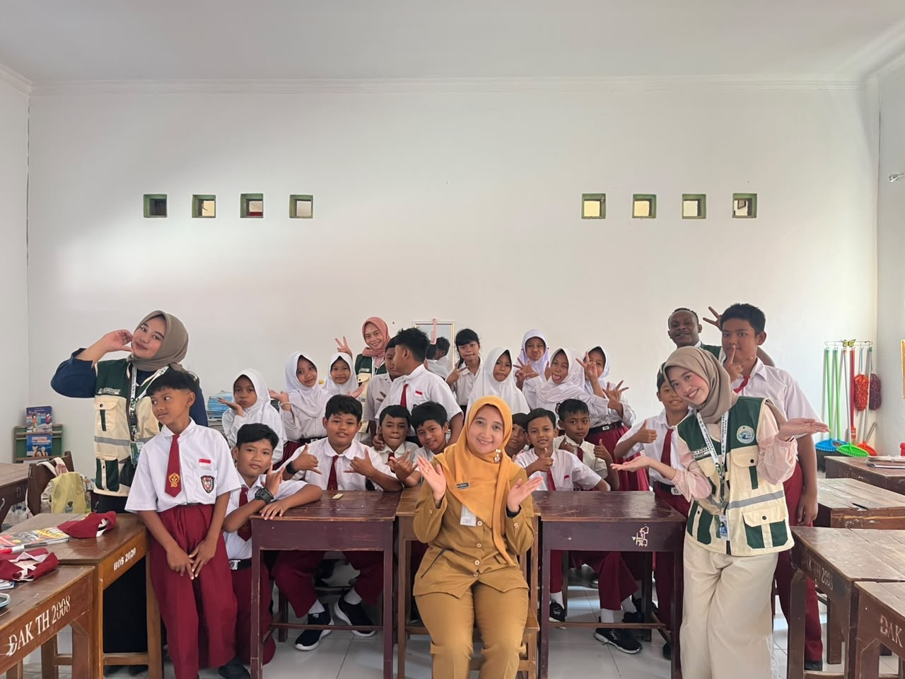
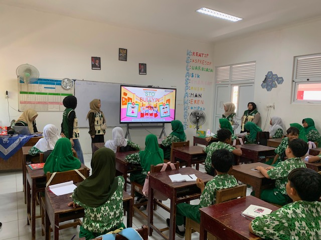

Dusun Soklatan adalah satu dari tiga dusun di Desa Sambirejo, Kecamatan Bringin. Di tengah lahan pertanian dengan kontur tanah yang landai hingga berbukit, rutinitas warga didominasi oleh kegiatan bertani. Para orang tua berangkat pagi hari dan baru pulang menjelang senja.
Kondisi ini membuat anak-anak sering menghabiskan waktu sepulang sekolah tanpa pendampingan orang dewasa. Minimnya pendampingan sore hari ini berdampak pada dua hal sekaligus: kemampuan akademik dasar anak yang tidak terpantau dan intensitas belajar membaca Al-Qur'an yang menurun.

Kebutuhan Akan Pendampingan
Sebagian anak di Soklatan sudah kenal huruf hijaiyah, tapi belum lancar membaca Iqra karena jarang mengulang bacaan di rumah. Sebagian lain kesulitan mengerjakan PR sendirian. Pola serupa banyak ditemukan di desa-desa pedalaman lain; anak yang orang tuanya sibuk seharian jarang mendapat bimbingan tambahan (Hamdi et al., 2024).
Selain itu, jumlah guru ngaji di TPQ dusun pun terbatas. Begitu guru berhalangan hadir, kegiatan mengaji ikut terhenti. Oleh karena itu, kehadiran mahasiswa Kuliah Kerja Nyata (KKN) Universitas Ngudi Waluyo diharapkan tidak hanya mengisi kekosongan tenaga pengajar, tetapi juga berperan sebagai motivator yang membuat suasana belajar menjadi lebih ceria dan interaktif (Ismail et al., 2024).
Berangkat dari kebutuhan tersebut, kami merancang satu program: pendampingan belajar dan mengaji setiap sore. Tujuannya sederhana namun mendasarmenguatkan kemampuan akademik, melancarkan bacaan Al-Qur'an, serta membentuk karakter religius anak sebagai bekal masa depan.
Metode Pembelajaran Partisipatif
Kegiatan ini menggunakan metode pelatihan dan pendampingan partisipatif berbasis praktik langsung (learning by doing). Pendekatan ini dipilih agar anak tidak sekadar duduk mendengarkan, melainkan terlibat aktif, baik saat mengerjakan tugas sekolah maupun mengeja Iqra.
Dilaksanakan pada bulan Juli hingga Agustus 2025, kegiatan ini mengambil waktu setiap sore hari selepas anak-anak pulang sekolah. Bertempat di masjid, mushola, dan posko KKN, jadwal ini disusun dengan cermat agar tidak berbenturan dengan waktu istirahat anak.

-
1Observasi & KoordinasiBerdiskusi dengan perangkat desa, takmir masjid, dan guru TPQ untuk menyesuaikan jadwal dan memahami kondisi awal anak-anak.
-
2Sosialisasi ProgramMenyampaikan tujuan dan manfaat bimbingan sore kepada orang tua, memastikan adanya dukungan dari lingkungan rumah.
-
3Sesi Belajar AkademikMembimbing anak mengerjakan PR, membaca, menulis, dan berhitung yang dikemas sambil bermain agar terhindar dari rasa jenuh (Nurlela et al., 2023).
-
4Pendampingan MengajiMembagi kelompok: pemula belajar Iqra dan pengenalan hijaiyah, sedangkan yang sudah lancar berlatih membaca Al-Qur'an dan tajwid dasar.
-
5Evaluasi & ApresiasiMemberikan stiker, alat tulis, atau sekadar pujian untuk memotivasi anak agar semangat hadir di hari berikutnya.
Hasil Nyata: Kelancaran dan Kedisiplinan
Konsistensi program ini membuahkan hasil. Sekitar 25 anak usia SD yang tergabung hadir secara rutin setiap sore. Antusiasme mereka memuncak terutama pada sesi belajar yang diselingi permainan interaktif. Metode yang sebelumnya monoton kini berubah menjadi pengalaman belajar dua arah yang menyenangkan.

Di bidang akademik, anak-anak kini lebih disiplin menyelesaikan tugas sekolah dan lebih berani tampil. Sementara itu, pada aspek keagamaan, tingkat kelancaran membaca Iqra dan Al-Qur'an meningkat pesat. Kesalahan pelafalan huruf perlahan berkurang, dan jumlah anak yang sukses "naik jilid" Iqra terus bertambah.
"Pembinaan bacaan Al-Qur'an yang dipadukan dengan praktik ibadah terbukti mampu menumbuhkan kedisiplinan dan kesadaran spiritual anak secara bertahap."
Perubahan tidak berhenti pada nilai akademik. Anak-anak terbiasa mengucapkan salam, tertib berkelompok, dan saling mengingatkan jadwal mengaji. Di sisi lain, orang tua yang semula sibuk bekerja mulai menunjukkan dukungan penuh, seperti memantau perkembangan anak dan menjemput mereka sepulang kelas (Rahmawati et al., 2023).

Simpulan dan Harapan Berkelanjutan
Program pendampingan ini membuktikan bahwa pendekatan sederhana namun konsisten mampu membawa dampak positif yang besar. Kemampuan akademik dasar anak-anak Soklatan menguat, bacaan agama semakin lancar, dan karakter religius pun tumbuh subur seiring berjalannya waktu.
Namun, waktu mahasiswa KKN di desa terbatas. Agar pelita pendidikan ini terus menyala di Dusun Soklatan, diperlukan estafet program dari warga lokal. Berikut adalah beberapa rekomendasi untuk menjaga keberlanjutan program:
Rekomendasi Keberlanjutan







Tidak perlu menunggu program berskala besar. Dengan sebuah papan tulis kecil, beberapa buku Iqra, dan kemauan untuk menemani, kita sudah bisa merajut harapan untuk masa depan mereka.
Abstrak: Program Kuliah Kerja Nyata (KKN) mahasiswa Universitas Ngudi Waluyo di Dusun Soklatan, Desa Sambirejo, berfokus pada pendampingan belajar sore hari dan bimbingan mengaji bagi anak-anak. Mengingat mayoritas orang tua bekerja sebagai petani/buruh harian, anak kurang mendapat pendampingan sepulang sekolah. Program ini memadukan bimbingan akademik dan mengaji (Iqra/Al-Qur'an) melalui pendekatan partisipatif. Hasil menunjukkan peningkatan kelancaran membaca, motivasi, serta kedisiplinan beribadah. Artikel ini memaparkan model pendidikan komunitas untuk memperkuat fondasi anak pedesaan.
Abstract: The Community Service Program (KKN) by Universitas Ngudi Waluyo students in Soklatan Hamlet focused on afternoon learning assistance and Qur'an reading accompaniment for children. With most parents working as farmers, children lack consistent guidance after school. The program combined academic tutoring with structured mengaji sessions via a participatory approach. Results show increased reading fluency, learning motivation, and religious discipline. This article describes a student-led community education model aiming to strengthen children's academic foundation and religious character in rural areas.
- Hamdi, M., et al. (2024). Pendampingan Pengajaran Melalui Rumah Binaan Anak KKN Kebangsaan di Wilayah Perbatasan Indonesia-Malaysia. Jurnal Pengabdian kepada Masyarakat Nusantara (JPkMN), 5(1), 1140-1146.
- Ismail, I., et al. (2024). Peran Guru dan Mahasiswa KKN dalam Pengajaran Al-Quran di TPQ Miftahul Khairot Desa Bukit Peninjauan I. Dinamika Sosial, 1(3), 9-19.
- Kurniawan, A., & Sitepu, J. M. (2025). Pembinaan Bacaan Al-Qur'an dan Fiqih Salat Berjamaah bagi Siswa MDTA Yayasan Pendidikan Islam Al-Muttaqin... Ardhi: Jurnal Pengabdian dalam Negri, 3(5), 91-105.
- Maghribi, A. M., et al. (2023). Peran Mahasiswa Dalam Meningkatkan Kemampuan Membaca Al-Quran Melalui Kegiatan KKN Mengajar Mengaji. BERDAYA, 6(1), 51-62.
- Nurlela, N., et al. (2023). Peran Mahasiswa KKN Sebagai Tenaga Pengajar Di Taman Pendidikan Al Quran (TPA) Desa Purwosari. Jurnal Kegiatan Pengabdian Mahasiswa (JKPM), 1(2), 83-86.
- Rahmawati, S., et al. (2023). Bimbingan Belajar Gratis Mata Pelajaran Matematika Tingkat SD di Yayasan Kencana Bakti Semesta (YKBS) Badung Bali. Bakti Cendana, 6(1), 70-76.
- Zahroh, L. A., et al. (2024). Pengabdian Kepada Masyarakat Melalui Peningkatan Minat Belajar Mengaji Al-Qur'an Anak Usia Dini. Masyarakat Mandiri, 1(3), 21-30.
Ucapan Terima Kasih:
Pemerintah Desa Sambirejo dan perangkat Dusun Soklatan atas izin dan dukungannya; takmir masjid/mushola serta guru TPQ setempat atas ruang kolaborasinya; seluruh orang tua dan anak-anak yang berpartisipasi dengan semangat; serta Universitas Ngudi Waluyo dan Dosen Pembimbing Lapangan atas bimbingan selama KKN.